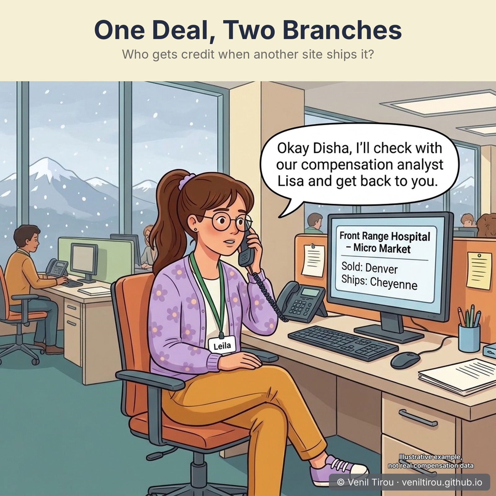
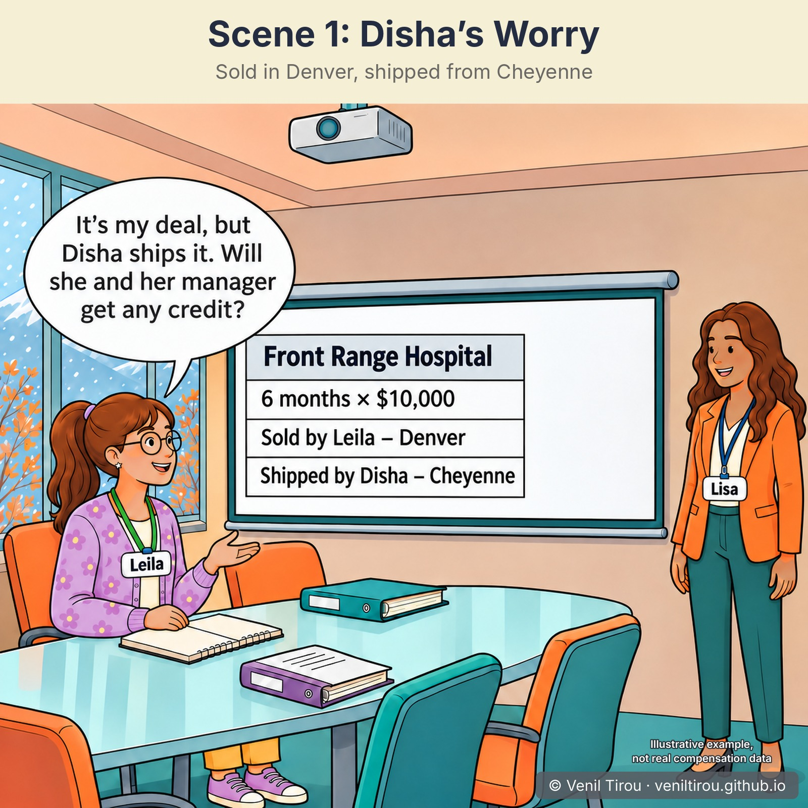
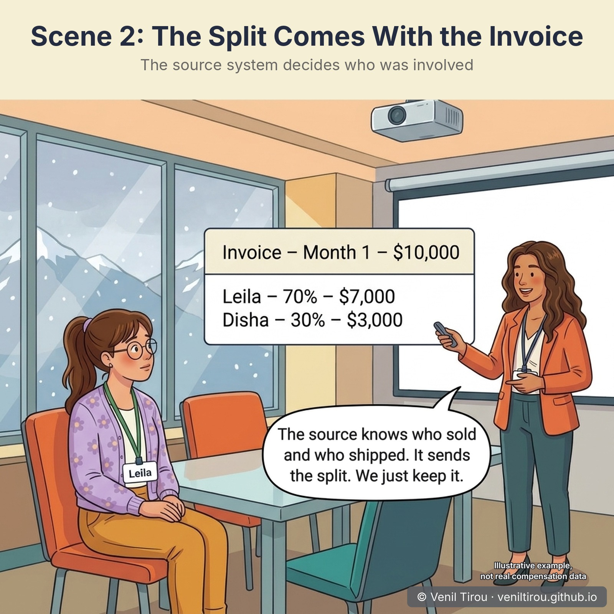
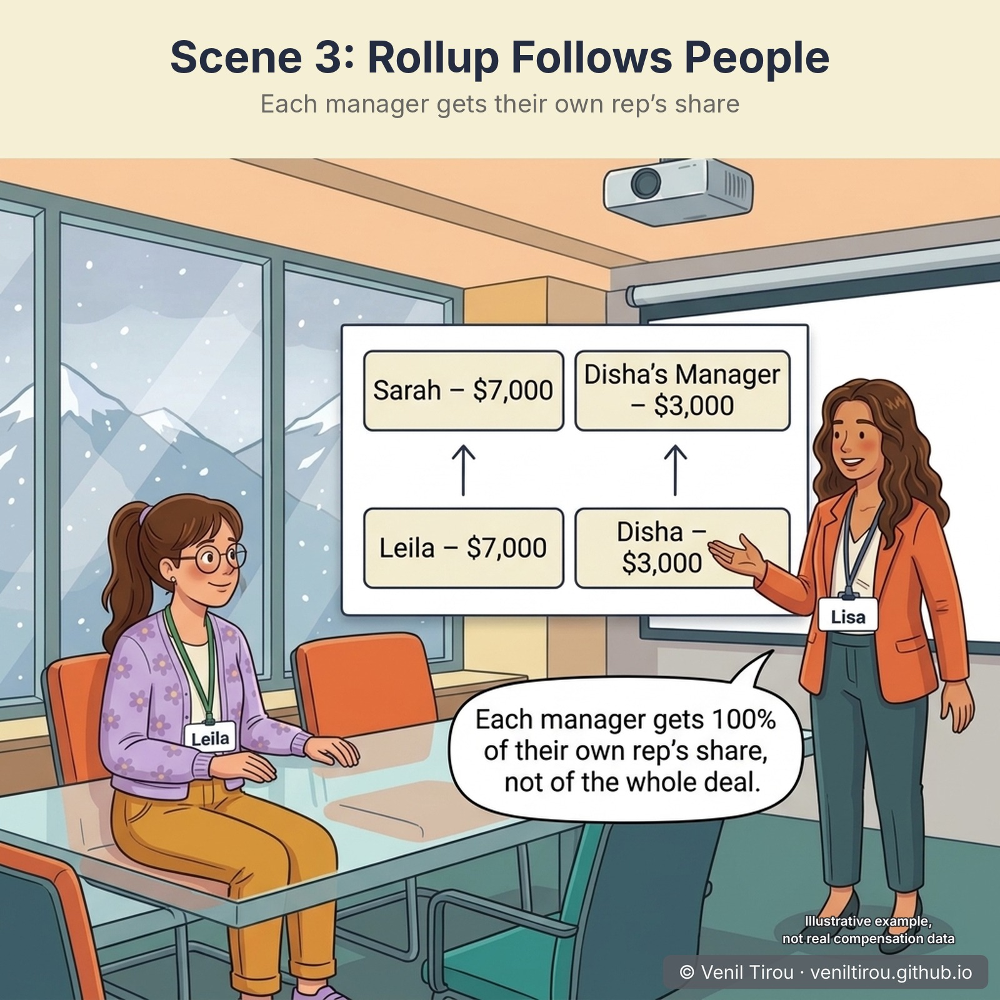
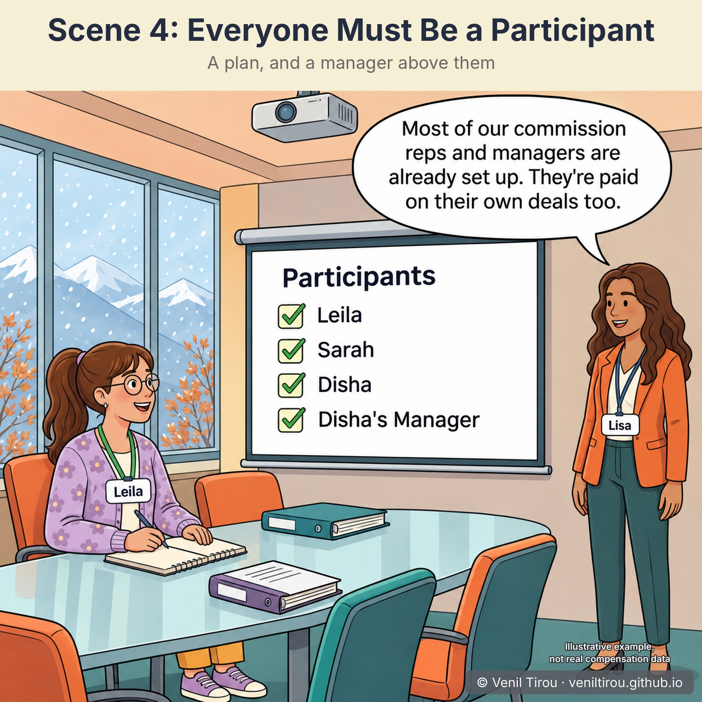
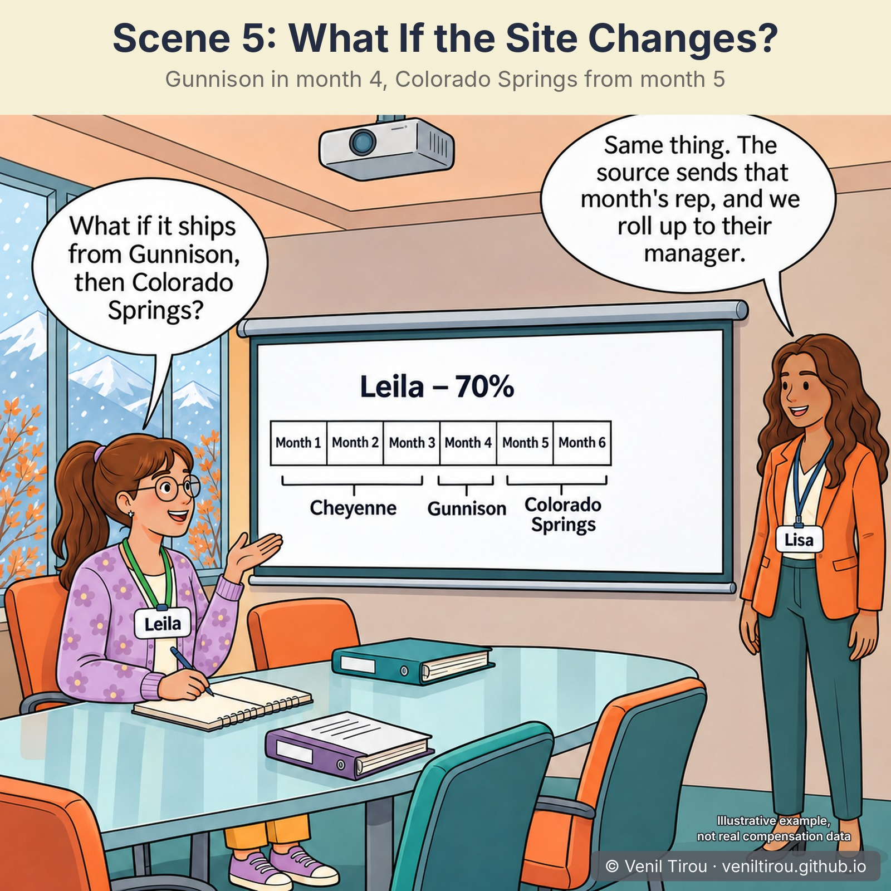
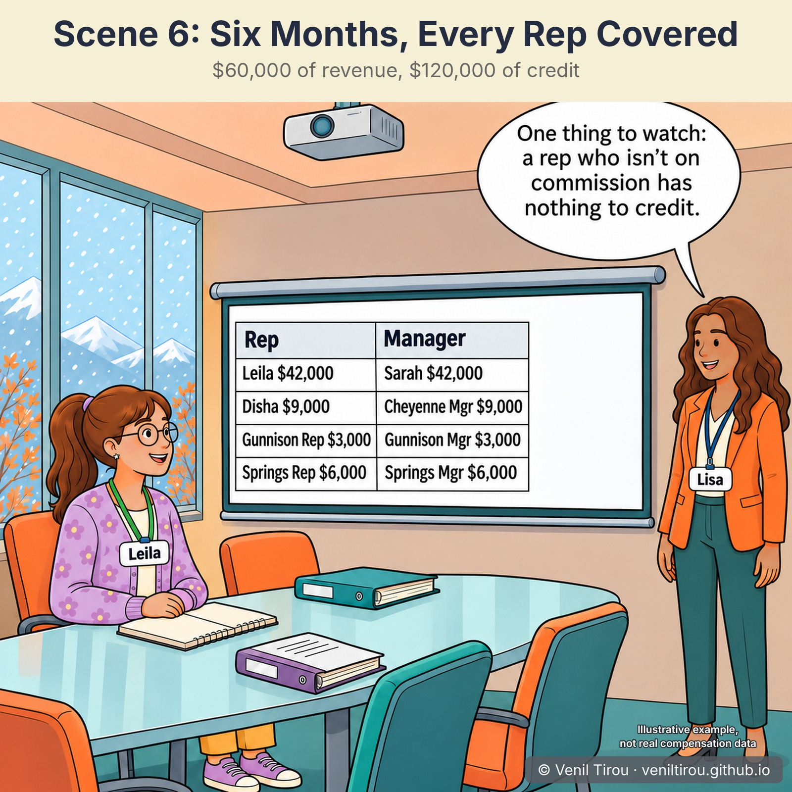
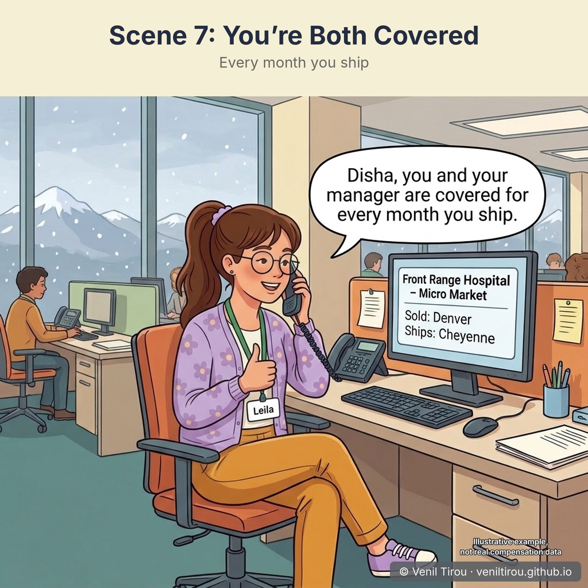

One Deal, Two Branches — Credit When Another Site Ships It
Leila sells a six-month contract in Denver, but the unit ships from Cheyenne, and later from Gunnison and Colorado Springs. The Cheyenne rep wants to know whether she and her manager will see any credit. Lisa shows Leila why they will, every month, without one change in Incentive Compensation. For direct, rollup and overlay credit on a single rep's deal, read One Deal, Three Credits; this chapter adds a second branch and a second rep who changes.
Each monthly invoice in Receivables names the reps involved: the rep who sold it and the rep at the shipping branch. Receivables does nothing more. A thin integration layer right after it turns those two reps into credits, 70% to the seller and 30% to the shipper, and sends the invoice to Oracle Fusion Incentive Compensation (OFIC) with both credit lines on it. Leila reports to Sarah; each branch rep reports to their own branch manager. Lisa, the compensation analyst, configured how those credits roll up.
👥 Characters in This Chapter
Lisa (ORANGE blazer) — Compensation Analyst at ABC Corporation; she answers the cross-branch questionLeila (FLORAL cardigan, glasses) — junior sales rep in Denver who sold the deal
Mentioned, not shown: Disha, the Cheyenne rep; Sarah, Leila's manager; and the branch managers and reps in Cheyenne, Gunnison and Colorado Springs.
📱 On mobile? Pinch to zoom to read the numbers clearly.
Prologue — The Call

Scene 1 — Disha's Worry

Scene 2 — The Split Comes With the Invoice

Scene 3 — Rollup Follows People

Scene 4 — Everyone Must Be a Participant

Scene 5 — What If the Site Changes?

Scene 6 — Six Months, Every Rep Covered

Scene 7 — You're Both Covered

Month by Month — Who Gets What
Rows marked Source arrive on the invoice. Rows marked OFIC rollup are created by Run Crediting and Rollup. Amounts in dollars of credit.
| Who | Origin | Months 1–3 | Month 4 | Months 5–6 | Total | Credit |
|---|---|---|---|---|---|---|
| Leila (Denver) | Source | 21,000 | 7,000 | 14,000 | 42,000 | Direct, revenue, 70% |
| Disha (Cheyenne) | Source | 9,000 | — | — | 9,000 | Direct, revenue, 30% |
| Gunnison rep | Source | — | 3,000 | — | 3,000 | Direct, revenue, 30% |
| Colorado Springs rep | Source | — | — | 6,000 | 6,000 | Direct, revenue, 30% |
| Sarah (Leila's manager) | OFIC rollup | 21,000 | 7,000 | 14,000 | 42,000 | Rollup, nonrevenue |
| Cheyenne manager | OFIC rollup | 9,000 | — | — | 9,000 | Rollup, nonrevenue |
| Gunnison manager | OFIC rollup | — | 3,000 | — | 3,000 | Rollup, nonrevenue |
| Colorado Springs manager | OFIC rollup | — | — | 6,000 | 6,000 | Rollup, nonrevenue |
Revenue credits total $60,000, the contract value. With the managers' rollup, total credit is $120,000.
Where the Split Comes From
Three systems, three jobs:
| System | Its one job |
|---|---|
| Receivables | Names the reps involved on each invoice: the header salesperson, plus a sales credit row for each rep on the line. Nothing about commission. |
| Integration layer | Applies the split by role and sends one transaction per invoice, with one credit line per rep. |
| OFIC | Keeps the credits and rolls each one up to that rep's own manager, Disha's manager included. |
The split lives in one small table, keyed by role, that the sales operations team owns. It holds no rep names:
| Reps on the invoice | Primary rep | Secondary rep |
|---|---|---|
| Primary only | 100% | — |
| Primary and secondary | 70% | 30% |
Keeping one transaction for the invoice, rather than splitting it into two, means every credit still traces back to the real $10,000 invoice. To change the split, change the table.
Couldn't OFIC apply the split itself? Rollup, yes, always. The split only under three conditions:
- The invoice import puts the second rep on the transaction as a field a rule can match on. Oracle documents only the header's Primary Salesrep ID for invoices, so test this in your own environment.
- Something tells OFIC whether a second rep is present, so the primary gets 100% or 70%. Receivables has no such flag.
- You accept rules that name every rep. In Fusion, a direct credit rule pays the named participants on the rule, so this takes about three rules per rep, with the 70 and 30 repeated in each. Every hire, transfer or change of split means updating them.
If all three hold, OFIC can do everything. If any fails, the integration layer does the split and nothing else, and OFIC still does all of the rollup. ABC chose the integration layer. Role-based allocation was an E-Business Suite feature (Sales Credit Allocation); Fusion has no equivalent module.
Sources (Oracle): How You Create Direct and Rollup Credit Transactions, Invoice Import Mappings, AutoInvoice Interface Table RA_INTERFACE_SALESCREDITS_ALL, REST: Create a credit.
The Setup Behind It
Nothing here is specific to Front Range Hospital or to Cheyenne. Set it once, and every cross-branch deal follows.
| # | Where | Setting |
|---|---|---|
| 1 | Setup and Maintenance: Manage Parameters | Direct crediting off; rollup crediting on; rollup hierarchy to use: Rollup hierarchy. This is Oracle's setting for credit transactions collected from another source. |
| 2 | Participant Assignments work area | Every rep and manager is a participant with a compensation plan. Most commission-eligible people already are. |
| 3 | Participant Assignments: rollup hierarchy | Each rep sits under their own manager: Leila under Sarah, Disha under the Cheyenne manager, and the Gunnison and Colorado Springs reps under theirs. |
| 4 | Receivables, then the integration layer (file import, REST or Oracle Integration Cloud) | Receivables names the reps on each invoice. The integration applies the role table and sends the invoice with its credits: the credit receiver, credit amount, split percentage and revenue type, 70% to Leila and 30% to that month's shipping rep. |
| 5 | Credits and Earnings | Each month, Collect Transactions brings in that month's invoice. Run Crediting and Rollup keeps its two credit lines as they are and adds one nonrevenue credit for each rep's manager. |
Sources (Oracle): Crediting and Rollup Parameters, Examples of Credits and Rollups, Overview of Credit, Rollup, and Classification, Import Transactions for Incentive Compensation, Transaction and Credit Collection Process.
Why This Chapter Matters
The takeaway: when the source system already knows who sold and who shipped, let it send the split, and let OFIC do what it does best: keep the credits and roll each one up to the right manager. Credit rules that try to work out the shipping branch inside OFIC duplicate what the source already knows, and break the first time the branch changes mid-contract.
The work moves to two agreements before go-live: the source system's team owns who gets the 70% and the 30%, and the compensation team makes sure everyone it can name is a participant with a manager above them. The lesson for sales ops: decide which system owns the split, and check that every rep it can name is on a plan.
Concepts Covered
| Concept | What it means | Scene |
|---|---|---|
| Credits from the source | Receivables names the reps, the integration layer adds the credit receiver, amount and split, and OFIC keeps them instead of running direct credit rules. | 2 |
| Role-based split table | The integration layer, not Receivables or OFIC, holds the 100% or 70/30 by role, so no rep names or percentages are written into credit rules. | 2 |
| Split credit | One transaction carries two credit lines, 70% and 30%, that add up to the invoice. | 2 |
| Rollup hierarchy | Managers automatically receive all the credit of the participants who report to them. | 3, 5 |
| 100% of the rep's share | A manager's rollup credit is 100% of their own rep's credit, not of the whole deal. | 3, 6 |
| Nonrevenue rollup credit | Rollup credits are nonrevenue, so revenue still totals the contract value. | 3, 6 |
| Participants | Credit can only land on a participant with a plan and a place in the hierarchy. | 4, 6 |
| A changing second rep | Each month's invoice names that month's rep, so a site change needs no change in OFIC. | 5 |
| No participant, no credit | A second rep who isn't on commission has nothing to credit; settle it with the source team. | 6 |